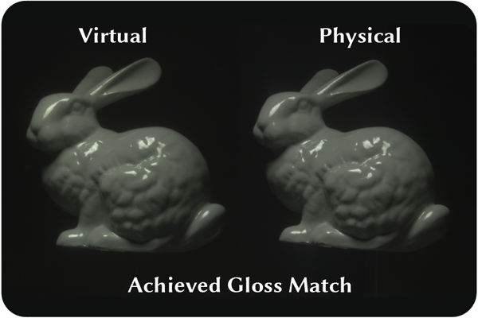
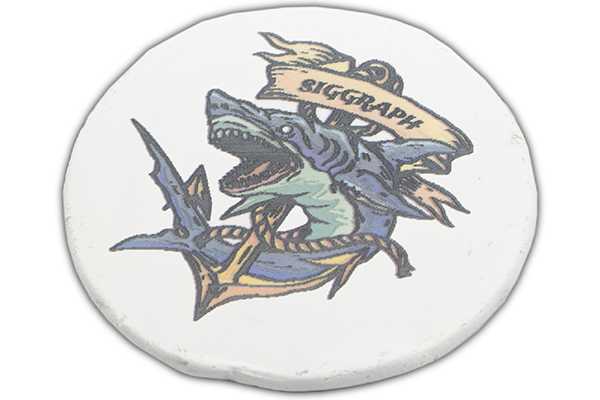
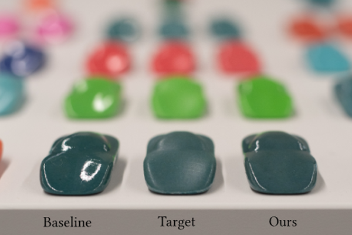
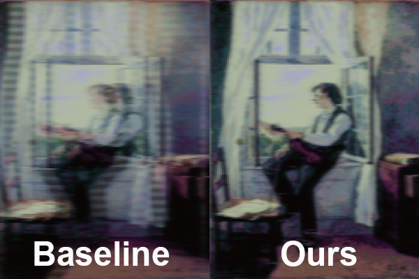
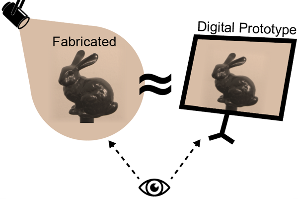
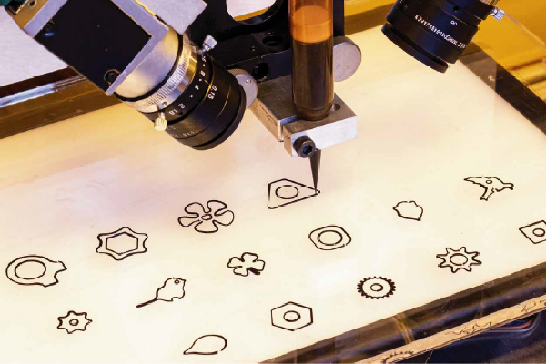

Publications

The Effect of Display Capabilities on the Gloss Consistency Between Real and Virtual Objects
Bin Chen, Akshay Jindal, Michal Piovarci, Chao Wang, Hans-Peter Seidel, Piotr Didyk, Karol Myszkowski, Ana Serrano, Rafal K. Mantiuk
SIGGRAPH ASIA 2023 (to appear)
Bin Chen, Akshay Jindal, Michal Piovarci, Chao Wang, Hans-Peter Seidel, Piotr Didyk, Karol Myszkowski, Ana Serrano, Rafal K. Mantiuk
SIGGRAPH ASIA 2023 (to appear)

Skin-Screen: A Computational Fabrication Framework for Color Tattoos
Michal Piovarci, Alexandre Chapiro, Bernd Bickel
SIGGRAPH 2023
Michal Piovarci, Alexandre Chapiro, Bernd Bickel
SIGGRAPH 2023

Gloss-aware Color Correction for 3D Printing
Jorge Condor, Michal Piovarci, Bernd Bickel, Piotr Didyk
SIGGRAPH 2023
Jorge Condor, Michal Piovarci, Bernd Bickel, Piotr Didyk
SIGGRAPH 2023

Learning Deposition Policies for Fused Multi-Material 3D Printing
Kang Liao*, Thibault Tricard*, Michal Piovarci, Hans-Peter Seidel, Vahid Babaei
ICRA 2023
Kang Liao*, Thibault Tricard*, Michal Piovarci, Hans-Peter Seidel, Vahid Babaei
ICRA 2023
Directionality-Aware Design of Embroidery Patterns
Liu Zhenyuan, Michal Piovarci, Christian Hafner, Raphael Charrondiere, Bernd Bickel
Eurographics 2023
Liu Zhenyuan, Michal Piovarci, Christian Hafner, Raphael Charrondiere, Bernd Bickel
Eurographics 2023

Gloss Management For Consistent Reproduction of Real and Virtual Objects
Bin Chen, Michal Piovarci, Chao Wang, Hans-Peter Seidel, Piotr Didyk, Karol Myszkowski, Ana Serrano
SIGGRAPH ASIA 2022
Bin Chen, Michal Piovarci, Chao Wang, Hans-Peter Seidel, Piotr Didyk, Karol Myszkowski, Ana Serrano
SIGGRAPH ASIA 2022

Closed-Loop Control of Direct Ink Writing via Reinforcement Learning
Michal Piovarci*, Michael Foshey*, Jie Xu, Timothy Erps, Vahid Babaei, Piotr Didyk, Szymon Rusinkiewicz, Wojciech Matusik, Bernd Bickel
SIGGRAPH 2022
Michal Piovarci*, Michael Foshey*, Jie Xu, Timothy Erps, Vahid Babaei, Piotr Didyk, Szymon Rusinkiewicz, Wojciech Matusik, Bernd Bickel
SIGGRAPH 2022